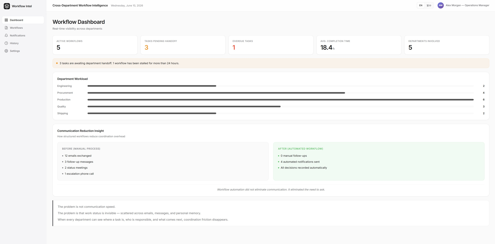
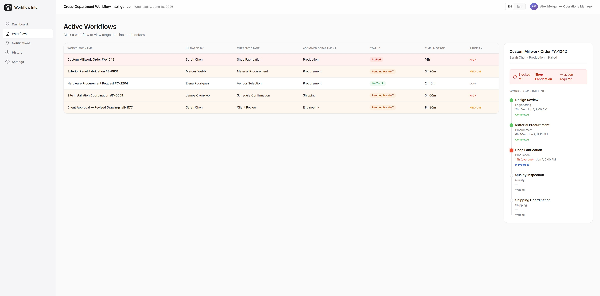
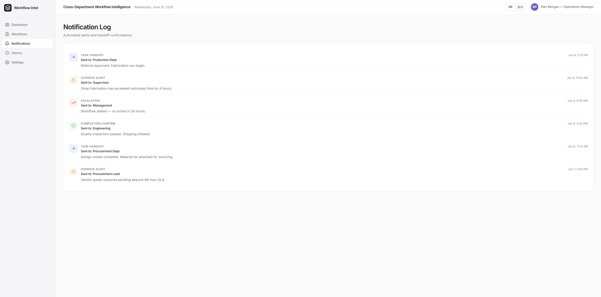
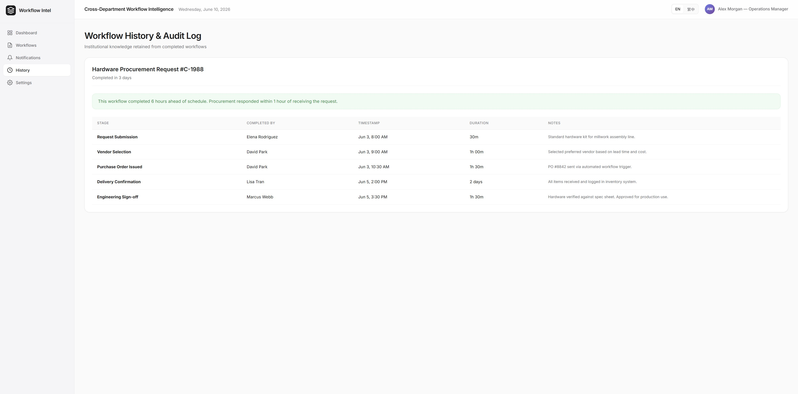

Designing Visible Cross-Department Workflows
設計結構化的跨部門工作流程
Reducing communication friction through automation and visibility

Challenge
In most organizations, cross-department collaboration is treated as a communication problem. But in practice, it is often a visibility problem.
The typical pattern looks like this: Department A completes a task and needs to hand off to Department B. Department B finishes and needs to notify Department A — or wait for the next team to pick up. These handoffs usually travel through phone calls, meetings, email, and messaging apps like Teams, Slack, or LINE.
Each individual notification takes only seconds. But as organizations grow, a significant portion of employee time gets absorbed by:
- Figuring out who owns the next step
- Checking whether a task has been completed
- Asking for status updates
- Searching through message history
Productive time gradually gets replaced by coordination overhead.
Worse, when something stalls, it becomes difficult for anyone — especially management — to quickly answer:
- Where is this task stuck?
- Who currently owns it?
- Who needs to pick it up next?
- How long has it been delayed?
- Has anyone already followed up?
The process exists. But the state of the process is invisible.
A typical example: a custom millwork company with fifteen employees and three departments — estimating, production, and installation. When a project is approved, the estimator notifies production by phone or message. Production completes fabrication and contacts the installation team on LINE. The installation team confirms by replying — or sometimes doesn't.
When a project falls behind, the owner calls each department head individually to reconstruct what happened. By the time the full picture is clear, the delay has already rippled into the next project.
No one is negligent. The process simply has no memory.
Approach
I didn't start by automating anything.
I've found that most cross-department friction doesn't come from a lack of tools — it comes from a lack of clarity about the process itself.
So I started by observing: how tasks actually moved between departments, which notifications were truly necessary, which steps were frequently missed, which situations required management to intervene, and which communication tools employees actually used day to day.
What I was trying to understand wasn't the messages themselves — it was what those messages represented in terms of work state.
From those observations, I began mapping the processes that had been buried inside emails, phone calls, and meetings into structured, visible workflows.
Solution
I designed a cross-department workflow system centered on process transparency.
The system consolidates information that was previously scattered across different communication channels, using automation to handle:
- Task creation and responsibility assignment
- Automatic notifications when handoffs occur
- Real-time status updates
- Completion confirmation
- Historical record keeping
When a task changes state, the system automatically notifies the next responsible party. Every participant can see, in real time, the current progress, pending items, responsible department, and task history.
Management can monitor overall workflow status through a dashboard — without relying on individual employees to report up.
Technology Stack
The good news is: there is no need to reinvent the wheel.
Both Microsoft and Google Workspace already offer mature low-code tools that integrate with your organization's existing data — no separate infrastructure required.
In a Microsoft environment, a practical starting point includes SharePoint, Power Automate, Power Apps, and Power BI. In a Google Workspace environment, I would pair n8n with Google Sheets as a foundation.
These tools provide a fast, low-risk path to getting started. Rather than building from scratch, you can deploy a working prototype, validate it with real users, and discover what your organization actually needs — before making any larger technical commitments.
If over time you encounter requirements that low-code tools cannot address effectively, that is the right moment to consider investing in custom application development.



Results
Cross-department collaboration shifted from passive tracking to active, visible management.
Work status that was previously scattered across emails and messages became:
- Visible — every participant could see current state at a glance
- Trackable — task history was preserved automatically
- Auditable — management could review progress without interrupting the team
- Improvable — bottlenecks became identifiable and addressable
In practice, teams that previously spent 30 to 60 minutes per person each day on status checks and follow-up messages found that time largely eliminated. More importantly, when delays did occur, management could identify the point of failure within minutes — rather than reconstructing events after the fact through phone calls.
For a small business owner, this shift matters beyond efficiency. It means less time spent as a human relay — and more time spent on work that actually requires judgment.
Key Insight
Most organizations believe they need faster communication tools.
But in this case, the real problem wasn't communication speed. It was the absence of process visibility.
When every participant knows where things currently stand, who owns the next step, and what is delayed — organizations can dramatically reduce coordination costs and redirect time toward higher-value work.
The most effective process design doesn't make people send more messages.
It makes messages unnecessary.
Leave a Comment
留言
Share your thoughts about this project
分享您對此專案的想法